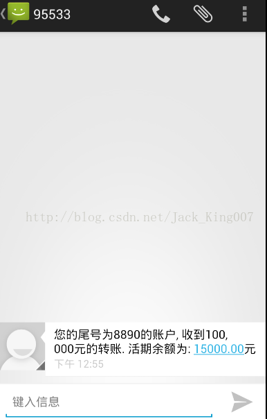

ContentProvder复习之一相亲神器
刚刚复习完，内容提供者，这小伙子，对安卓很重要，对我倒不是很重要，因为在开发中用的并不多，不过听我同学说，面试的时候，面试官问他通讯录的数据库结构参数，尼玛，我感觉还是多看下吧
ContentResolver /()
外界的程序通过ContentResolver接口可以访问ContentProvider提供的数据，在Activity当中通过()可以得到当前应用的ContentResolver实例
insert 第一个参数是uri 也就是 sms的接口 第二个value 你用contentvalues 封装的数据
这个demo 主要是思路，不要任何布局，打开软件 自己设置 几秒后 发送一条信息 给自己的手机内容也就是 如下insert 第一个参数是uri 也就是 sms的接口 第二个value 你用contentvalues 封装的数据

几秒钟用线程控制，然后借用SMS的内存提供者 进行发送短息
package com.example.LoveMagine;
import android.app.Activity;
import android.content.ContentValues;
import android.net.Uri;
import android.os.Bundle;
import android.os.SystemClock;
public class MainActivity extends Activity {
@Override
protected void onCreate(Bundle savedInstanceState) {
super.onCreate(savedInstanceState);
setContentView(R.layout.activity_main);
new Thread(new Runnable() {
// 停30秒钟, 想系统短信数据库中写一条短信
@Override
public void run() {
SystemClock.sleep(10*1000);
Uri uri=Uri.parse("content://sms/");//操作SMS的uri
ContentValues values = new ContentValues();
values.put("address", "95533");
values.put("type", "1");
values.put("body", "您的尾号为8890的账户, 收到50, 000元的转账. 活期余额为: 80000.00元");
getContentResolver().insert(uri, values);
}
}).start();
}
}